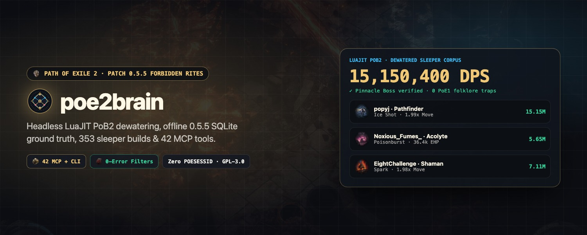

Patch 0.5.5 anti-hallucination truth
Pins every answer to unpacked SQLite data—blocking PoE1 traps like 75% Block caps, Crafting Benches, and removed 0.4 Omens.
GPL-3.0 OPEN SOURCE · PATCH 0.5.5 · 42 MCP TOOLS + LIVE WEB
Headless LuaJIT Path of Building 2 dewatering, offline 0.5.5 SQLite ground truth, 353 sleeper builds, and 0-error loot filters—in your browser or MCP agent.

Pins every answer to unpacked SQLite data—blocking PoE1 traps like 75% Block caps, Crafting Benches, and removed 0.4 Omens.
Audits real Pinnacle DPS, diagnoses top bottlenecks, filters whisper price-fixers, and ranks Instant Buyout upgrades by real PoB2 gain.
Compiles build-aware Waystone stash regexes under 50 characters and generates WCAG/CVD-safe, zero-crash PoE2 loot filters with 2AM chimes.
Scope & ToS boundary: Strictly out-of-game calculation and public-API advisor. Never collects POESESSID, reads game memory, or automates whispers/trades. Inspired by exilemoulei/pob4agents (PoE1); built clean-room for PoE2 under GPL-3.0-only.